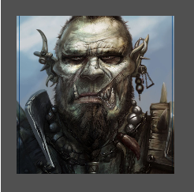
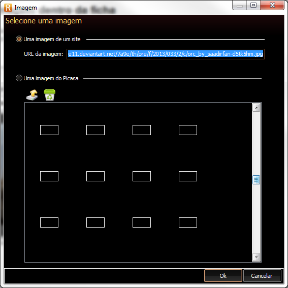

Permitir o usuário escolher uma imagem dentro da ficha
Permitir o usuário escolher uma imagem dentro da ficha
É necessário o usar a tag image, colocar sua propriedade "editable" para "true" e definir um "field" para ela.
Adicionalmente, você poderá definir a propriedade "style" da tag como "autoFit" para que o a imagem ocupe todo o espaço definido para ela.
Exemplo:
| \<?xml version="1.0" encoding="UTF-8"?> \<form name="frmFTeste"> \<image field="imagemDoPersonagem" editable="true" style="autoFit" left="20" top="20" width="200" height="200" /> \</form> |
|---|

O usuário poderá alterar a imagem quando clicar nela:

Veja também:
Created with the Personal Edition of HelpNDoc: Easily create Qt Help files